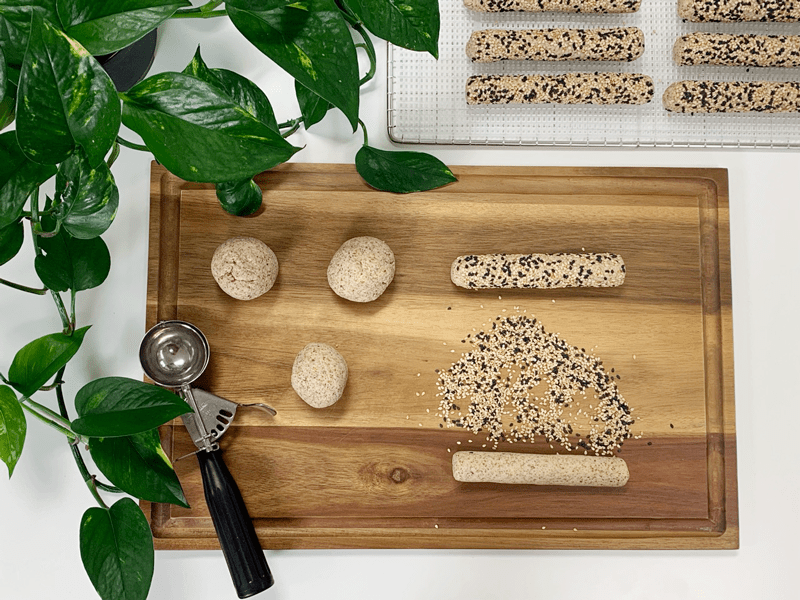
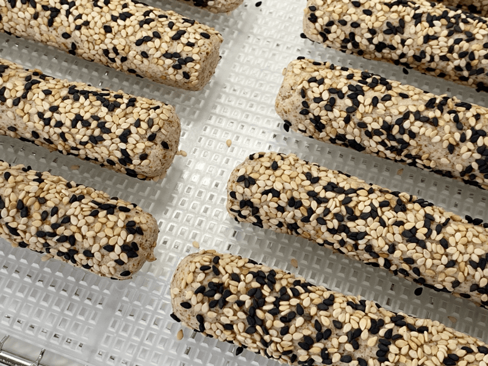

Amazing Italian Bread Sticks | Raw | Gluten-Free | Oil-Free
Let’s talk about these breadsticks. They turned out so incredibly delicious — and honestly, the shape alone made them extra fun to eat. There’s something about holding a crispy, savory stick of goodness that just feels… right.
Today, my mom tried them alongside a raw basil pesto noodle dish and was completely wowed. She couldn’t believe how they looked, felt, and tasted. The texture was especially impressive — light, crispy, and flavorful. Safe to say: I’ll be making these again. And again.
Even our friend Craiger (who still furrows his brow at some of my “creative” raw food ideas) gave them a nod of approval. He said these would easily fool anyone — “You’d never know they’re raw.” High praise from a skeptic!
Recipe Update – November 1, 2014
A quick heads-up: I’ve made a few changes to this recipe since it was first posted back in May 2011. The original version used ½ cup of Irish moss and no additional water. But since Irish moss can be tricky to find — and I’ve mostly phased it out of my kitchen — I’ve updated the recipe to use psyllium husks instead.
I now use about 1 ½ cups of water. That said, I recommend starting with just 1 cup and adding more only if needed. The exact amount will depend on how much moisture is left in your almond pulp. Oh, and one more tweak: I added a little garlic powder to punch up the flavor. Because, let’s be honest — garlic makes everything better.
A Quick Note on Almond Pulp
I often get asked if almond pulp can be swapped for ground almonds. My answer? Not really.
Here’s why: almond pulp (the byproduct of homemade almond milk) is lighter in both weight and texture compared to ground almonds. It gives these breadsticks a unique, airy texture that just doesn’t translate the same with heavier nut flours.
That’s not to say you can’t experiment with ground almonds or oat flour. But just know it’ll change the final result — in both texture and taste. My suggestion? Try the original version first, then tweak as you go.
Dehydrated or Baked — Your Choice
I know not everyone has a dehydrator (yet!) and plenty of you still enjoy cooked foods. So I’ve included both dehydrating and baking instructions in the recipe. Whether you go raw or roasted, I’ve got you covered. 😊
Stay tuned for the full recipe and instructions below! And as always, let me know if you try them — I love hearing your kitchen stories.
With crunchy, breadstick-y joy, amie sue
 Ingredients:
Ingredients:
20 (5″) breadsticks
Dry ingredients:
Wet ingredients:
- 2 cups (400 g) packed, moist almond pulp
- 1 cup (200 g) water
- 1/4 cup (70 g) date paste
- 1 Tbsp (14 g) lemon juice
- 2 tsp (11 g) maple syrup
Coating:
- Sesame seeds (for rolling the breadsticks in)
- Coarse sea salt
Preparation
- In a food processor fitted with the “S” blade, combine the oats, flax, psyllium, coconut flour, Italian seasoning, garlic powder, and Himalayan pink salt. Pulse until evenly mixed.
- Note: Oats are naturally gluten-free but can be cross-contaminated during processing. If you’re sensitive to gluten, make sure to use oats labeled “gluten-free.”
- Add the almond pulp, 1 cup water, date paste, lemon juice, and maple syrup. Blend until fully incorporated.
- If the dough feels too dry to hold together, add more water 1 tablespoon at a time until it sticks nicely.
- Allow the mixture to sit for 10 minutes. This gives the flax and psyllium time to activate and bind the dough.
- Using a ¼ cup measuring cup or cookie scoop, portion the dough evenly. Roll each portion into a ball with your hands. On a clean surface, roll each ball into a breadstick about 5 inches long, gently rolling it back and forth with the palms of your hands.
- If the dough isn’t sticking together, add a little more water to fix it.
- Spread sesame seeds on your work surface (mixing white and black if you like). Roll each breadstick in the seeds to coat.
- For an extra burst of flavor and texture, sprinkle some coarse sea salt on top of the coated breadsticks before dehydrating or baking.
- Place the breadsticks on mesh sheets in your dehydrator.
- Dehydrate at 145°F (63°C) for 1 hour. This sets a nice crust on the outside.
- Reduce the temperature to 115°F (46°C) and continue dehydrating for approximately 6 hours, or until the desired level of dryness is achieved.
Tip: Touch the center of a breadstick to check for doneness. It should be dry but not completely brittle—unless that’s what you’re going for. You control the crunch factor!
Oven Method (Not Raw)
- Preheat your oven to 350°F (175°C).
- Place breadsticks on a parchment-lined cookie sheet.
- Bake for 30–40 minutes, checking for doneness at the 30-minute mark.
Heads up: These won’t brown like traditional breadsticks, so don’t rely on color as your cue.
Storage Tips & Shelf Life
- Store in an airtight container in the fridge for 3–5 days.
- The more moisture left in the breadsticks, the shorter the shelf life—so if you prefer them on the softer side, plan to enjoy them sooner rather than later. Raw food is meant to be eaten fresh and vibrant, so don’t expect these to last forever (not that they’ll stick around long enough to find out).
The Institute of Culinary Ingredients
- To learn more about maple syrup by clicking (here).
- What is Himalayan pink salt, and does it matter? Click (here) to read more about it.
- Are oats gluten-free? Yes, read more about that (here).
- Are oats raw? Yes, they can be found. Click (here) to learn more.
- Do I need to soak and dehydrate oats? Not required but recommended. Click (here) to see why.
- Learn how to grind your own flaxseeds for ultimate freshness and nutrition. Click (here).
- How does psyllium work in a recipe? Learn more (here).
Culinary Explanations:
- Why do I start the dehydrator at 145 degrees (F)? Click (here) to learn the reason behind this.
- When working with fresh ingredients, it is essential to taste test as you build a recipe. Learn why (here).
- Don’t own a dehydrator? Learn how to use your oven (here). I do, however, honestly believe that it is a worthwhile investment. Click (here) to learn what I use.


© AmieSue.com